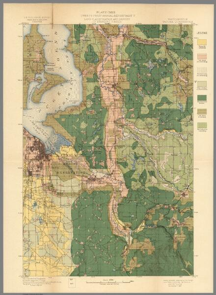

Our People

This is Our Story. It is the story of a family of fearless warriors who were related by blood in a great circle that linked the Nisqually villages, the Puyallups, Muckleshoots, and joined by our Upper Snoqualmie and Wenatchi relatives. We would have never been successful without the legendary warriors and strategists of the Weowicht dynasty including Owhi, Kamiakin and Qualchan, joined by the Weyallup family from Selah and circling back along the Naches River, over the Cascades and closing the circle at Nisqually.
White people have told their story and some have even tried to tell ours. Muckleshoots have an expression for that. “It’s your lie, you can tell it any way you want.” The white accounts have one big lie in common. They say that the Indians lost the war. It is time that Our Story is told: The story of our courage, strength and ultimate success. That we went to war to get our land back and we got it back. It is long passed time that we properly honor our warriors and express our gratitude to their families.
War was declared on us at the Medicine Creek Treaty Council when a short, self-important tyrant named Stevens presented a treaty to our people taking all our land for no money paid, that reserved just 2 sections of our land for Squaxin, 2 sections of our land for the Nisquallies and 2 sections of our land for all the Puyallups. And ZERO acres for Muckleshoot. A month later, at the Point Elliott treaty council, ZERO land was reserved for Muckleshoot. The original treaty reservations averaged fewer than three quarters of an acre for each one us. Whites could claim half that, 320 acres each, before the treaties even cleared the title. The Stevens’ reservations for Squaxin and Nisqually had no drinking water, no salmon bearing streams, no pastures for the large herds of Nisqually horses. Three quarters of an acre of gravel soil could never have sustained even a decent garden. The reservation that Steven designated for Puyallup in what is now downtown Tacoma, was no better. It would never have supported the large population that would eventually locate there. Our chiefs knew that we would have all starved to death.
Stevens was a West Point Academy trained engineer and knew that moving to the Medicine Creek reservations would exterminate our people. George Gibbs, one of the only reasonable white men at the treaty council, reported that Stevens was drunk. Dr. Barbara Lane told me personally that the weight of the evidence supports Gibbs’ observation. Either Stevens was drunk or intended for all of us to die or both. This small man seriously underestimated Our People. His ignorance and arrogance left our leaders with only one choice: “To do what we do best and fight for what is ours.”
Our Land
Our warriors’ efforts returned 25,000 acres of our land to Our People: 17,000 acres to the Puyallup reservation, almost 4,000 acres were restored to the Nisqually reservation and the Muckleshoots reclaimed nearly 4,000 acres of our land after zero had been reserved for us. This film is dedicated to our warriors and their wives and families who answered the call to fight for the return of our land and who succeeded in securing its return. We won our first treaty war and the descendants of the first treaty war fought together-our cousins at Nisqually, Puyallup and Muckleshoot-and won our second treaty war and secured our treaty right to fish. Listen and remember the words of our Chief, Leschi: Whatever the future holds, do not forget who you are. Teach your children, teach your children’s children. Teach them the pride of a great people…A time will come again when they will celebrate together with joy. When that happens, my spirit will be there with you.
The Battles
Leschi was as good a friend as we ever had. He was dignified in his intercourse and proud of his country, and, I may say, proud of himself. He had a benevolent countenance that unmistakably stamped him as a good man. Leschi told me before going to the war that the Indians would not hurt any of the settlers, and advised us to stay on our farms, which we did. I never was afraid to go wherever I wanted to during the war and did as I wished, and was never molested…. Stevens wanted me to go into the war, but I wouldn’t do it. I knew it was his bad management that brought on the war, and I wouldn’t raise a gun against those people who had always been so kind to us when we were so weak and needy. The Indians could have killed us all at any time during the eight years we were here before Governor Stevens came, but instead of molesting us in any way they helped us all they could. Owen Bush to Ezra Meeker, Pioneer Reminiscences. James McAllister was one of those “weak and needy” settlers who had been squatting for over ten years on Nisqually land. He wrote a letter to the Superintendent of Indian Affairs for Washington Territory claiming: From the most reliable Indians that we have in this country, we have information and are satisfied that Leschi, a sub-chief and half Clickitat is and has been doing all that he could possibly do to unite the Indians of this country to raise against the Whites in a hostile manner and has had some join in with him already. Sir, I am of the opinion that he should be attended to as soon as convenient for fear that he might do something bad. Let his arrangements be stopped at once. Your attention to the above will be exceedingly appreciated by the people of Nisqually bottoms. 109 Acting Governor Mason responded to McAllister’s letter by authorizing a militia to be called Eaton’s Rangers. “ Should you meet any unusual or suspicious assemblage of Indians, you will disarm them, and should they resist, disperse them, and put any who resist or use violence to death, or send them to Fort Steilacoom in irons, or bound as you may deem best. McAllister joined the rangers who promptly commenced the first military act of war. On October 24, 1855, armed with orders to kill resisters. They charged out to Chief Leschi’s home at Muck Creek to arrest Leschi and his brother Quiemuth. The brothers were already gone. McAllister and Connell continued the pursuit from Muck Creek to one of Muckleshoot’s agriculturally rich prairies. Connell had been squatting on our land and destroying our wild blueberry crop. On October 27, my uncle Tu-wa-pa-ti, took out McAllister. We also killed Connell. The next day, October 28, 1855 my Muckleshoot people took the opportunity to settle some scores in our backyard. White people are good at propaganda. Whenever Indians kill white people they call it a massacre, erect a monument and name streets, parks, and buildings for their dead. That’s how we came to have Brannan Park. When whites first showed up in our territory, our Old Ones fed them and expected them to be on their way. But they didn’t leave. They cut our timber, shot our game, took fish from our river. They treated us like slaves, abused our women. None of the Muckleshoot land’s title had been cleared before the war. The treaty that ceded the land where Auburn now stands wasn’t ratified until 1859. So the “settlers” we killed that day were all illegal trespassers. But we didn’t kill all the settlers, just the ones who had treated us the worst. An aggressive squatter named William Brannan had the audacity to stake his “claim” adjacent and downriver from our main town of Ilalqo. That put him in a position to be able cork off our salmon run. Chief Nelson personally warned him to leave the day before, but he was too arrogant or too stupid to heed the warning. My Soos and Ilalqo people were closely related. They took care of this business. At the end of the war, Stevens wanted to execute Chiefs Nelson, Leschi, Quiemuth and Kitsap. He could never catch Nelson, but even if he had, Stevens admitted the illegality of the actions against the Muckleshoot, in a letter to Col. George Wright (October 4, 1856), “ All belong to bands with whom treaties have been made, and in the case of all, except Nelson, the treaty has been sanctioned by the Senate, and the execution of the treaty has been placed in my hand.” This is the Green River Valley, better described as the Valley of the Warriors- the impenetrable home of our Green River warriors. Just a couple of miles upriver from Soos village is the site of Burns Creek village. This is where Chief Leschi and his people were welcomed by his Muckleshoot relatives to make a base camp for the five month duration of the war. Kitsap and Kanasket both had homes further upstream near Newhauken Creek. The descendants of Kitsap, Kanasket and Nelson are hundreds strong at Muckleshoot to this day. Three days after the Muckleshoots dispatched the unwelcome neighbors at what is now Auburn, puyuyux̌ and his brothers killed two militia men in a place that became known as Finnell’s swamp. Not far from here is the place that Thunder became the protector of the Puyallup people in war. Thunder kept its promise and many of the Puyallup warriors survived the war, lived to be 110 old men, and left many descendants. puyuyux̌ was the father of Jimmie Cross’s wife Deephop and Tyee Dick’s wife Lucy. By itself, the death of these militia men was not a remarkable event, as we were now in full war. But Stevens later used the death of Moses as a tool for his personal vendetta against our good chiefs. Chief Leschi and Quiemuth were later indicted for killing this man who had taken up arms against Our People. Quiemuth was then murdered while in custody. Chief Leschi was lynched after his second “trial” that was based on perjured testimony. Leschi and Quiemuth did not kill either man. They never betrayed those who did. No one was ever tried for the murders of our warriors or the murders of our women, children and old ones. On November 3, 1855 soldiers tried to ford the White River. The white accounts demonstrate almost complete ignorance of the Muckleshoots and little knowledge of the Puyallup warriors. If they had known us, they would have known they would not be crossing the White. The Creator made this river for us. The salmon were put in the river for us and we were put here to take care of the salmon. Frightened soldiers boasted of killing lots of our people that day. Instead, they wasted a lot of ammunition. I enjoyed Ezra Meeker's recollection of the story as told by Tyee Dick. […] [T]hey lost but one man[…]the battle was 'hi-ue he-he, hi-ue he-he' (lots and lots of fun.) The Indians […] began to push up hats and sticks […] and bang, bang, bang would go the guns of the enemy, down would go the hat and another Indian reported killed. This […] brought yells of delight from the Indians all along the line. Tyee Dick's granddaughter, Cora Richards Brown has many descendants to this day at the Puyallup Tribe. The next skirmish of the war took place below what is now Bonney Lake, not far from sqʷəәspł village, home of Kitsap's younger brother quoyəәpqəәd or Tommy Lane, who has many descendants at Puyallup Tribe today. H.H. Bancroft described it this way, Upon the march, which began on the 24th of November, Slaughter was attacked at night at Biddings prairie, one mile from the Puyallup, and sustained a loss of forty horses during a heavy fog which concealed the movements of the Indians. […] On the morning of the 26th E. G. Price of Wallace's company, while attending to camp duty, was shot and killed by a lurking foe. The chiefs who commanded in the attack on the night of the 25th were Kitsap and Kanascut of the Klikitats, Quiemuth and Klowowit of the Nisquallies, and Nelson of the Green River and Niscope Indians. During two nights that the troops were encamped on this prairie the Indians continually harassed them by their yells, and by crawling up out of the woods which surrounded the little plain, and under cover of the fog coming close enough to fire into camp in spite of the sentries, who discharged their pieces into the surrounding gloom without effect. The forty horses were payback for the theft of Leschi’s stock by the militia the previous month. 111 All our warriors carried tubšadad or warrior power. Our word tubšəәdəәʔ means people from East of the mountains. All of the prominent warriors of our first treaty war carried tubšəәdəәʔ blood, tubšadad power as well as others powers that helped them in war like calling in heavy fog or thunder when needed. On December 4, 1855 the soldiers camped just north of our main Muckleshoot village of Ilalqo on the “Brannan Homestead.” We thought we had made it clear on October 28, that trespassers were not welcome, but the soldiers returned to the same site, with the same result. The traitor John Haiton was traveling with the soldiers as “a guide”. That evening, Lt. Slaughter foolishly allowed himself to be illuminated by their cooking fire. Haiton warned Slaughter that we were present and then Haiton had the good sense to duck. Lt. Slaughter refused to believe him and Sasticum and Paul Weyallup took out Slaughter. Our sharpshooters were powerful and honorable men. They were later allotted choice land on the Puyallup reservation, lived long lives and left successful families. The Sasticum name is proudly carried today at Puyallup. Paul Weyallup’s stepdaughter, Susan Ashue Young, was the matriarch of one of the Puyallup Tribe’s largest families. Paul Weyallup’s descendants through his sons include tribal historian Marlene Spencer Simla and many others on the Yakama reservation. Chief Leschi had worked tirelessly to prevent the war and he continued his peace efforts throughout the war. On January 5, 1856, he visited one of the concentration camps where whites herded Indians for the duration of the war. Leschi’s mere presence on Fox Island, being so close to a main center of white military activity at Steilacoom, set off the opposite effect. Nisqually historian Cecelia Carpenter wrote, “When the message arrived at Steilacoom [sent by Agent John Swan] that Leschi had landed on the island [it] sent the citizenry and the army into a panic unlike any other event of the war.” Quite simply, the whites were terrified of the consequences, that were sure to result, from their own bad behavior. They brought the Ten Commandments with them, forced them on us, and then they violated them. Thou shalt not kill. Thou shalt not commit adultery. Thou shalt not steal, bear false witness against thy neighbour, covet thy neighbour’s house, covet thy neighbour’s wife, manservant, maidservant, nor his ox, ass, nor any thing that is thy neighbour’s. Ezra Meeker said “…the Indians living on the upper reaches of the Green, White, Puyallup and Nisqually Rivers….were wide awake Indians and were the tribes that went on the warpath.” We refused to go to concentration camps. The “Attack on Seattle” occurred on January 26, 1856. I want to share a portion of the description by A.J. Splawn from his book, Ka-mi-akin, The Last Hero of the Yakimas. About the middle of January, 1856, a worn and weary Indian arrived at Ow-hi’s village, having crossed the Cascades on snowshoes. He bore a message from Chief Leschi asking that a band of warriors be sent him to aid in his contemplated attack upon Seattle. Leschi was closely related to the Yakimas, his mother having been a daughter of Chief We-ow-wicht. He and Qualchan, therefore, were cousins. 112 At the council which Ow-hi called, Qualchan offered to lead some braves over the mountains. About one hundred men were ready to go and they were soon on their way. When they got as far as Ka-sit-kees (Easton), their horses had to be sent back on account of the deep snow. The warriors, proceeding on snowshoes, reached Leschi’s camp the fourth day out. Here they found about 300 warriors under the leadership of Leschi and Coquilton near Lake Washington, awaiting the arrival of their Yakima relatives before making the attack. We learned that day that our weapons were no match for cannon and howitzer fire. During the day-long skirmish we killed two, terrified everyone, and succeeded in making our point. The whites had no luck penetrating the Valley of the Warriors, our Green River stronghold, so they hired Pat Kanim and his people to fight their fight for them. On February 15, 1856, Pat Kanim’s bunch killed Diakud and his little daughter, beheaded them and sold their heads to the whites. A week before, Pat Kanim turned on his own people, bowed down to the soldiers, and turned over two good men, Hoptowit and Skwai-kwi, who were hung on the prairie just south of Toltxʷ, now known as “Carnation". Thomas Jefferson, son of King George of the S’Klallams, eloquently expressed my own feelings about Pat Kanim in a letter he wrote in 1917, And in reference to Pat Kanim he fought against his own kind, fought and helped the white people and maybe fought against his own relations. What has he got to show today for what he did? I don’t believe he received any pensions, not even a monument at his grave. I mention Pat Kanim because he was my uncle by law. He married my Aunt. Kanasket was crucified by soldiers near the foot of Elhi Hill on February 29, 1856. Kanasket's power told him that he was going to die that day. He was not afraid of death but the soldiers were terrified of him. Pashniki and his brother, Quatskanim, were aides to their uncle Kanasket. Phillip Starr's father accompanied his uncle Kanasket that morning, but managed to escape. Afterward, they wrote gruesome descriptions of the strength of Kanasket’s body and of his hatred for the whites, who had caused Our People so much needless suffering. Kanasket did not live to see the return of Our Land, but his family did. Kanasket left two daughters, Annie Nason and Lucy Paimes. Most of Annie's family are still at Muckleshoot and include the Calvert, Hungary and Fred Lane families. Lucy married a Puyallup allottee. Their son, Edward Paimes, married Joe and Lucy Bill's daughter from Muckleshoot. Their daughter Lillian left the Hoffers, and Vernon Louis and Dr. Verna Bartlett's family who are Puyallup. Kanasket is uncle to all the Starr's, to the Bob James family that includes my Anderson cousins and Councilman Jeremy James. Many nieces and nephews descend from Kanasket's Wenatchi siblings, most of whom are members of the Colville Tribes. Their strength and accomplishments continue to make all of us stronger as Indian People. The Stuck River was the site of the Muckleshoot protest fishery during our second treaty war. We should probably not have been surprised when we realized that the warriors of the second treaty wars were direct descendants of the warriors of the first treaty war. The Willie Frank family comes from Chief Martin’s warrior family. Ramona Bennett comes from Iyakama. Cecil 113 Moses, our Muckleshoot fish war chief came from Kitsap. Those are just a few examples and soon we need to tell story of our second treaty war as well. The Stuck River channel runs from Auburn’s Game Farm Park to Sumner. In our language, the name for the Stuck River is stux̌ʷ, meaning "plowed through." After the ice age, two whales plowed through from Lake Puyallup to the salt water. When the lake drained, the Stuck River channel remained. The White River runs down this channel today, joining the Puyallup at Sumner. But at the time of the war, the main channel of the White River swung north at Game Farm, right through what is now Auburn, joining the Green River at our main Muckleshoot town of Ilalqo, continuing north as the White River and eventually becoming the Duwamish. It is important to understand how the river has been changed in order to understand the accounts of the war. On a march up the Stuck River Valley, at White River Crossing, the Nisqually warrior Yetakh, shot A.V. Kautz in the leg on March 1, 1856. Yetakh was the great-grandfather of the Kautz boys. Yetakh and A.V. Kautz were on good terms with each other and there were no hard feelings over the shooting. A.V. Kautz later did his best to prove that Leschi was innocent of the crime for which he was eventually hung. Our People must never again forget to honor our relatives from east of the mountains for the sacrifice they made in our time of need and while they were still engaged in their own war. It was the second time that Qualchan and warriors answered our call. [W]hen about the first of March, 1856, an Indian runner from Puget Sound came to Ow-hi's village on the Wenas with word from Leschi that the soldiers were pressing his people so hard that they had time neither to rest nor sleep, Qual-chan and E-ne-as set out at once with fifty braves via the Nah-cheez pass. …they found Leschi, Stehi and Qui-em-uth with about 300 warriors, skirmishing with Col. Casey's command.” A.J. Splawn This brief battle was said to be our last engagement with the U.S. regulars, on this side of the mountains. We would yet have to contend with the militia: Steven’s private army. While we enjoyed many military victories during the war and were ultimately victorious in regaining our land, it was a time of great suffering for our people. Luplupton told his family he went ten days without food at the end of the war. Paul Weyallup said simply: “My son, we had a hard time to get our land here.” The Boise Creek and South Prairie Creek villages were located at an Indian crossroads where the Muckleshoot trail, Puyallup trail and Nisqually trail converged into the Naches Trail. It was a place that became too dangerous to live as a result of the war. This community included Kanasket and his brother Wakatai as well as my grandmother Mary tsubulshed, from whom all the James Daniels family descend, her brother Mowitch Man, her sister ts-le̓-le-wat who was George Nelson’s wife, her cousins Deehop from whom the Cross family descends, and tsi da bał who was Phillip Starr’s mother. Charlie Ashue told a story of his father’s valor during a skirmish at Boise Creek near our White River hatchery. 114 A small group of our people had secreted themselves from the soldiers and were encamped there. My father had an injury to his back and was leaning against an alder tree when the solders, unseen by him crept up behind. When he saw the soldiers knock the old people down he said to Mowitch Man: “Snatch up your boy and run, you first and I last” The old man seized his boy and ran to safety. My father fired one shot and leaped across a small stream of water. One leg went down in the mud and he lay there. A soldier came and pricked him with his bayonet. The soldier could barely reach him. My father never moved. The soldier said, “Well, he is dead. It is no use to shoot a dead man.” My father looked. He worked his leg out of the mire, he ran behind a snag, he fired; he got his man. He had now got two of the soldiers, having killed one the first time he fired. He took two rolls of blankets belonging to the dead soldiers. The soldiers had burned the blankets and food of the Indian camp. The two Indian survivors charged and slaughtered the soldiers. They tormented the soldiers all night until they had to get up and leave. The Indians took all their food and blankets; they made it even. That night they killed a lot of soldiers. Mowitch Man’s brother and wife and son were killed. John Haiton was the informer who showed the soldiers where our people were.” Accounts of the war contain many inconsistencies and uncertainties with respect to dates, place names, participants and casualties. For instance, a number of whites claimed credit for the wounds inflicted on Shot Mouth Charlie Sheadshut during the war. Joe Young said the shooter was John Haiton. Joe Young’s maternal grandmother, one of Paul Weyallup’s wives, was related to Haiton and that kinship spared him the retaliation he deserved. Forty-five years after the war, white boys in Tacoma shot Charlie Sheadshut in the back of the neck as he and his family were camped near Commencement Bay. The old warrior refused to prosecute, saying only, “if it had been one of his children that had been hit, instead of himself, the child would have been killed.” The war has never been over for our people; it still goes on today. On March 10, 1856 the fighting returned for the last time to Connell’s Prairie. A.J. Splawn gathered the stories of the old people, telling of the clash with the militia and of our own Trail of Tears across the ice-encrusted snow of Naches Pass. The two forces were about equal, the fight, which raged all day, resulting in a drawn battle. The Indians had seven killed and about twenty wounded. At a council held that night, Qual-chan expressed the opinion that further fighting would be useless. "Today's fight has convinced me, "he said, "that you cannot cope with the whites. I noticed reinforcements constantly arriving in the camp of the enemy, and these will continue, whereas you have the greater portion of your fighting men now on the ground. I advise you to move all your people at once to the Yakima valley. It was decided to act upon this advice and the retreat began at once. These people had made their brave fight; their last stand for their homes against a fate too strong for them. Worn and weary they took their way, with what little food they had hastily gathered the morning after the battle, over the snow and across the icy streams. In that dreadful retreat over the winter mountains, many old men and 115 women and little children perished by the wayside and were buried in the snow. The wails of the women and the crying of the children touched even the stout heart of Qual-chan who said to his friend E-ne-as, "The suffering of these people, caused by the whites, has determined me never to surrender or quit fighting them so long as I live." He kept his word. Our people were fed and cared for by their Weowicht relatives of the Kamiakin and Owhi families. We entered into a peace treaty with Col. George Wright. For the warriors and the US military, the war had ended. But the tiny tyrant Stevens had missed most of the war while off making treaties with the Blackfeet, Coeur d’Alenes, Quinaults and others. When he was able to turn his full attention to Puget Sound, he proceeded to create his own war, fought by his own private army. Our warriors had already withdrawn to the east, so Stevens declared open season on those who were left. Stevens turned his wrath on the “Muck Creek Men,” former Hudson Bay Company employees who had married Indian women. Stevens authorized his pet volunteer, “Captain” Maxon, to arrest these farmers for treason, including John McCloud, the patriarch of hundreds of Nisqually and Puyallup descendants. Historian and teacher, Abbi Wonacott, has written the most complete account we have of the massacre of old men, women and children who had sought refuge near Chief Leschi’s birth village on the Mashel River, beginning March 30, 1856. Nisqually warrior Charlie Martin said, The father and uncle of Mrs. Alice James were killed at Mashelle by soldiers. There were five or six killed at that time, three men and two women. The names of the men killed Pah-tah-tah, To-bol-hweet-sa and Lu-khaladkh. To-bol-hweetsa was the father of Butcher Sam, a fighter. Those people at Mashelle had slipped around to an unfrequented place in order to be out of the way of the soldiers. Sam McShell or Butcher Sam and Alice James were both later allotted at Puyallup. Sam McShell is buried in the Cushman cemetery. Alice James moved to the Nisqually reservation after the forced sale of the Puyallup allotments. The depredations against our people did not end. Soldiers murdered the father of George Yaniquish and his brother Itawis. The old man was a cripple. There are many descendants of this family today including the Andersons, Heather Hull, the Clara Squally John family and the Nelsons from Alice Hanson. August 5, 1856 is a day to celebrate. It is one of the only times in the history of the United States that Indians went to war to get their land back and did get their land back. We as Indian people have sustained ourselves with a sharp sense of humor. I don’t think Governor Stevens knew he was writing such comic material when he announced, in words that have become very familiar to Indian people in dealing with white leaders: “I believe there will be no lying. I am sure I will try not to lie.” Then he said this was all our fault: Those Res[ervations] were suggested by yourselves. I had those reserves surveyed. I found them not good. I sent word to Leshi that those Res[ervations] 116 were not good and your brother Col. Simmons told all the Indians that the reserves should be changed. And finally, the words that changed our future: You shall have a large reservation at Nisqually, one large reservation on the Puyaloop. Those reservations shall give you ground enough for horses and to the Horse Indians, Muckleshook I will give land between White and Green Rivers and I will send a man with you to mark out the ground so that you may be satisfied.
The Journey
Honor the Warriors

Listen and remember the words of our Chief, Leschi: Whatever the future holds, do not forget who you are. Teach your children, teach your children’s children. Teach them the pride of a great people…A time will come again when they will celebrate together with joy. When that happens, my spirit will be there with you. Remember to Remember Quiemuth Murdered November 19, 1856 Gov. Stevens’ office Leschi Lynched February 19, 1858 Steilacoom Prairie Qualchan Lynched September 24, 1858 Latah Creek Owhi Murdered October 3, 1858 Tucannon River 117 Thanking our Historians Arthur C. Ballard 1886-1962 Who preserved histories from over 100 of Our Indian People Katherine Joseph Sauk Suiattle 1914-2005 Cecelia Carpenter Nisqually 1924-2010 Lawrence Joseph Sauk Suiattle 1940-2011 Judy Wright Puyallup 1939-2013 Dr. Barbara Lane 1927-2013 Dr. Karen James 1939-2016 Marlene Spencer Simla Yakama Matilda “Tillie” Marie Timentwa Gorr Colville Confederated Tribes. Methow, Chelan; Entiat; Wenatchee, Okanogan, Sanpoil Emily Mansfield Dr. Karen Capuder Kanien'keha:ka/French/Irish Abbi Wonacott Gilbert King George Muckleshoot Tallis King George A